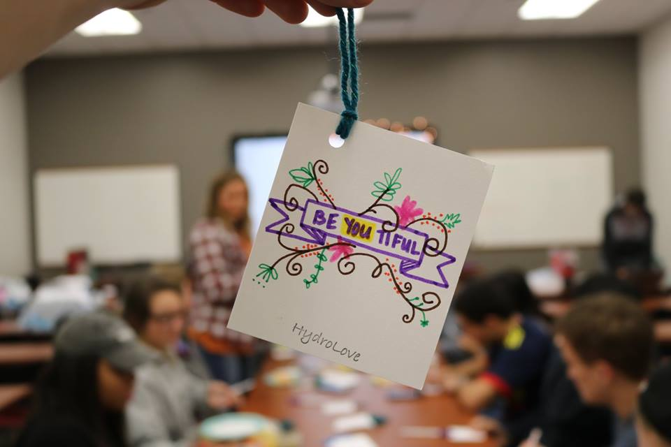

Hydrolove is an organization that hands out water bottles downtown every Thursday night!
| Promote safe drinking | Share God's love |
|---|---|
| Hand out free water bottles | Have intentional conversations about God |

Fig1. - A label and some people who participate in Hydrolove
We make labels that we put on the bottles we hand out. These labels have inspirational messages sometimes, or messages about God and his love for us. If you come to Hydrolove we make these labels from 10:00pm to 11:00pm.
Hydrolove accepts people of any denomination to serve with us. We even enthusiastically invite people who aren't even Christians to come help us if they feel so led! We just want to spread God's love downtown and we are accepting of all and are glad to see anyone there! :)
A bible verse we like to reference is:
"THE SPIRIT AND THE BRIDE SAY, “COME.” AND LET THE ONE WHO HEARS SAY, “COME.” AND LET THE ONE WHO IS THIRSTY COME; LET THE ONE WHO DESIRES TAKE THE WATER OF LIFE WITHOUT PRICE." REVELATION 22:17
This verse is good, not only because it references water, but because we want people to know that if they're looking for fulfillment that we personally find that in the love of Jesus Christ, and we want to share that good news with others. We want to show that that fulfillment doesn't have to come from methods such as drinking.
These are people you can get into contact with that would love to invite you to Hydrolove:
Fig2. - Penguin going to work at Hydrolove